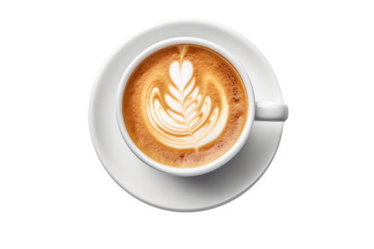

Café
Con nuestro café, podrás disfrutar de las bebidas calientes de todo el mundo. Utilizamos café de Etiopía, Kenya e Indonesia. Molemos el café tostado en el momento para lograr un sabor y un aroma inigualables. Nos ajustamos a los gustos de nuestra clientela, porque cada uno es único.

Muchos de nuestros clientes prefieren distintos tipos de café, algunos con leche, otros sólos e incluso algunos dsfrutan del toque dulce de la nata montada. Usamos todo tipo de leche para nuestros cafés: de vaca, de almendra, sin lactosa...